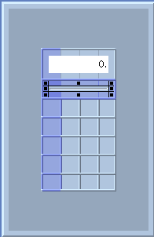

Exercise 3: Adding Components
In this exercise, you will learn how to select a component in the GUI builder palette and place it in the desired location in your application. Specifically, you will add a label and labeled bar in the first two rows of the grid. You will also edit their attributes.
When you add components to the grid, you are laying them out in relation to one another. You will see the actual spacing of how the components will look in your application when you preview the application in Exercise 5.
Adding a Text Label
- Click the Text Label component in the GUI builder's AWT tab.
As you move your pointer over a component in the palette, the name of the component appears in the lower-left corner of the browser's footer.
- In the layout window, click the first cell in the first column.
A label appears in the cell. Eight small squares, or handles, appear on the sides and corners of the label. These handles indicate the label is selected.
If you place a component in the wrong cell, delete it as follows: Select the component; then choose GUI -> Cut Component.
- Click a handle on the right side of the component and drag it across the three cells to the right.
The component now spans all four cells in the first row.
- Make the label the length of the grid by dragging the cell width control on the bottom of the layout window.
The cell width control is a black line between two small boxes. When you click on the control, arrowheads appear on the ends of the black line and the component's size is automatically increased to fill the containing cell.
- Click to open the attribute editor.
- In the name box, type display.
- In the text box, type 0. and click Apply.
The text 0. now appears in center of the label.
- Select right in the alignment list, and type white in the background box.
- Click OK.
In the layout window, the label background changes to white and the text is right-aligned.
Adding a Labeled Bar
- Click the Labeled Bar component on the GUI builder's Additional tab.
- Click the first cell in the second row.
A bar appears in the cell.
- Click a handle on the right side of the component and drag it across the three cells to the right.
- Choose GUI -> Save Generate.
Your GUI layout should look like this:

 Next lesson:
Next lesson:
- Exercise 4: Adding Multiple Components